에너지관리기사 (2006-05-14 기출문제)
1과목: 연소공학
1. CO2 와 연료 중의 탄소분을 알고 있을 때 건연소가스량(G')을 구하는 식은?
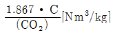
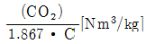
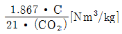
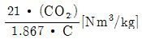
(정답률: 55%)

2. 보일러 등의 연소장치에서 질소산화물(NOx)의 생성을 억제할 수 있는 연소 방법으로서 효과가 없는 것은?
- 2단 연소 방법
- 저산소(저공기비) 연소
- 배기의 재순환 연소
- 연소용 공기의 고온 예열
(정답률: 59%)
3. 연소를 계속 유지시키는데 필요한 조건을 바르게 나타낸 것은?
- 연료에 산소를 공급하고 착화온도 이하로 억제한다.
- 연료에 발화온도 미만의 저온 분위기를 유지시킨다.
- 연료에 산소를 공급하고 착화온도이상으로 유지한다.
- 연료에 공기를 접촉시켜 연소속도를 저하시킨다.
(정답률: 80%)
4. 메탄(CH4)가스를 공기 중에 연소시키려 한다. CH4의 저위 발열량이 11970kcal/kg이라면 고위발열량[kcal/kg]은 약 얼마인가? (단, 물의 증발잠열은 600kcal/kg으로 한다.)
- 13320
- 10740
- 2450
- 1210
(정답률: 34%)
5. 어떤 기체연료의 고발열량이 24,160kcal/kg이고 표준상태에서 중량이 1.96kg이었다. 다음 중 이 기체는?
- 메탄
- 에탄
- 프로판
- 부탄
(정답률: 28%)
6. 다음 중 기체 연료의 장점이 아닌 것은?
- 운반과 저장이 용이하다.
- 대기오염이 적다.
- 연소조절이 용이하다.
- 적은 공기로 완전연소가 가능하다.
(정답률: 82%)
7. 조건과 같은 조성의 액체연료에 대한 이론공기량(Nm3/kg)은?
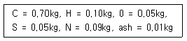
- 8.89
- 11.50
- 15.74
- 18.89
(정답률: 53%)
8. 다음 중 액체연료 관리를 위해 최저의 온도로 위험도를 표시하는, 인화점 시험 방법이 아닌 것은?
- 태그식(Tag type) 시험법
- 봄브식(Bomb type) 시험법
- 클리브랜드식(Cleveland type) 시험법
- 아벨펜스키식( Abel pensky type) 시험법
(정답률: 65%)
9. 굴뚝의 이론통풍력(Zt)을 다음 식으로 표시할 때 는 어떤값인가? (단, 식에서 T 는 절대온도(K), H 는 굴뚝높이(m), γ는 비중량(kg/m3), 첨자 a, g는 공기, 가스를 의미한다.)
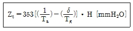
- 표준상태하의

- 표준상태하의

- 배기상태하의

- 배기상태하의

(정답률: 43%)
10. 고체연료의 연료비를 식으로 바르게 나타낸 것은?
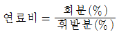
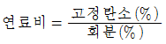
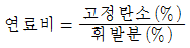
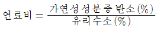
(정답률: 69%)
11. 대기오염 방지를 위한 집진장치중 습식집진장치에 속하지 않는 것은?
- 백필터
- 충전탑
- 벤추리 스크라버
- 사이클론 스크라버
(정답률: 75%)
12. 연소에 관한 용어, 단위 및 수식의 표현이 올바른 것은?
- 연소실 연발생율의 단위 : kcal/m2 h
- 화격자(火 格 子) 연소율의 단위 : kcal/m2 h
- 공기비(比 : m) =

- 고체연료의 저발열량(Hℓ)과 발열량 (Hf)의 관계식 : Hh=Hℓ-600(9H-W)(kcal/kg)
(정답률: 34%)
13. 탄소 1kg을 이론공기량으로 완전연소시켰을 때 나오는 연소가스량(Nm3)은?
- 8.90Nm3
- 1.87Nm3
- 16.67Nm3
- 22.40Nm3
(정답률: 60%)
14. 연소가스 분석결과 CO2 농도가 CO2max 값과 같을 때 공기비(m)는 얼마인가?
- 1.0
- 1.1
- 1.2
- 1.4
(정답률: 56%)
15. 다음 중 일반 가스의 저장에 사용되지 않는 홀더는?
- 유수식 홀더
- 무수식 홀더
- 고압 홀더
- 저온식 홀더
(정답률: 22%)
16. 생활 폐기물의 소각을 위한 연소기의 종류 중 다음에 설명하는 것에 해당하는 것은?
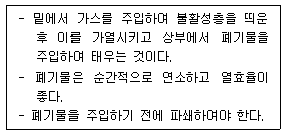
- 다단로식 소각로
- 스토커(Stoker)식 소각로
- 유동층식 소각로
- 로터리킬른식 소각로
(정답률: 56%)
17. 연료소비량이 50kg/h인 로(爐)의 연소실 체적이 30m3, 사용연료의 저위발열량이 5400kcal/ kg라 할 때 연소실 열발생율은 얼마인가? (단, 공기의 예열온도에 의한 영향은 무시한다.)
- 9000[m3/(kcal∙h)]
- 9000[kcal/(m3∙h)]
- 5000[m3/(kcal∙h)]
- 5000[kcal/m3∙h)]
(정답률: 65%)
18. 연소에 있어서 과잉공기가 지나칠 때 나타나는 현상으로 틀린 설명은?
- 연소실 온도가 저하되고 완전연소 곤란
- 배기가스에 의한 열손실 증가
- 배기가스 온도가 높아지고 매연이 증가
- 열효율이 감소되고 연료 소비량이 증가
(정답률: 54%)
19. 연료 연소시 탄산가스 최대치(CO2max)가 가장 높은 것은?
- 연료유
- 코크스로가스
- 역청탄
- 탄소
(정답률: 67%)
20. 표준상태에 있는 공기 1m3 속에 산소는 약 몇 g이 함유되어 있는가?
- 100
- 200
- 300
- 400
(정답률: 47%)
2과목: 열역학
21. 포화 증기를 단열 팽창시키면 상태는?
- 과열증기가 된다.
- 과냉액이 된다.
- 포화수가 된다.
- 포화액이 된다.
(정답률: 74%)
22. 다음 중 교축과정(Throttling Process)에서 생기는 현상과 무관한 것은?
- 엔탈피 일정
- 압력 강하
- 온도 강하
- 엔트로피 불변
(정답률: 64%)
23. 0℃와 100℃ 사이에서 조작되는 Carnot 냉동기의 성적계수(CP 또는 COP)는 얼마인가?
- 1.69
- 2.73
- 3.56
- 4.20
(정답률: 65%)
24. 1atm의 포화액을 10atm까지 단열압축시키는데 필요한 펌프의 일은? (단, v = 0.001m3/kg)
- 92.97kgfㆍm3/kg
- 95.⑤kgfㆍm3/kg
- 98.17kgfㆍm3/kg
- 101.17kgfㆍm3/kg
(정답률: 20%)
25. 증기압축 냉동사이클에서 응축온도는 동일하고 증발온도가 각각 아래와 같을 때 어느 경우에 이 사이클의 성능계수가 가장 큰가?
- -20℃
- -25℃
- -30℃
- -40℃
(정답률: 69%)
26. 브레이튼 사이클(Brayton cycle)은 어떤 기관에 대한 이상적이 cycle 인가?
- 가스터빈 기관
- 증기 기관
- 가솔린 기관
- 디젤 기관
(정답률: 87%)
27. 엔탈피에 대한 설명 중 잘못된 것은?
- 경로에 따라 변화하는 값이다.
- 정압 과정에서는 엔탈피 변화량이 열량을 나타낸다.
- H = U + PV 로 정의된다.
- 계를 형성하는 물질의 양에 따라서 변화하는 값이다.
(정답률: 54%)
28. 열역학적 계란 고려하고자 하는 에너지 변화에 관계되는 물체를 포함하는 영역을 말하는데 이 중 폐쇄계(closed system)는 어떤 양의 교환이 없는 계를 말하는가?
- 에너지
- 질량
- 압력
- 온도
(정답률: 44%)
29. 증기압축 냉동사이클에서 증발기 입, 출구에서의 냉매의 엔탈피는 각각 29.2, 306.8 kcal/kg이 1시간에 1냉동톤당의 냉매 순환량[kg/h.RT]은 얼마인가? (단, 1냉동톤은 3320 kcal/h로 한다.)
- 15.04
- 11.96
- 13.85
- 14.06
(정답률: 43%)
30. 폐쇄계의 등온과정에서 이상 기체가 행한 일(W)은? (단, 압력 P, 부피 V, 온도 T 는 제 1계에서 제 2계로 변하며 R은 상수)
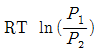
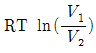
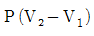
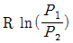
(정답률: 59%)
31. 한 용기 내에 적당량의 순수 물질 액체가 갇혀 있을 때, 어느 특정 조건하에서 이 물질의 액체상과 기체상의 구별이 없어질 수 있다. 이러한 상태가 유지되기 위한 필요, 충분조건은?
- 임계압력 보다 낮고, 임계온도 보다 높을 것
- 임계압력 보다 낮을 것
- 임계온도 보다 낮을 것
- 임계압력 보다 높고, 임계온도 보다 높을 것
(정답률: 43%)
32. 실제 기체의 거동이 이상기체 법칙으로 표현될 수 있는 상태는?
- 압력이 낮고 온도가 임계온도 이상인 상태
- 압력과 온도가 모두 낮은 상태
- 압력은 임계압력 이상이고 온도가 낮은 상태
- 압력과 온도가 모두 임계점 이상인 상태
(정답률: 54%)
33. k = 1.3의 고온공기를 작동 물질로 하는 압축비 5의 오토사이클에 있어서 압축의 압력이 2.06[kg/cm2], 최고압력이 54[kg/cm2]일 때 평균 유효 압력은 몇 [kg/cm2]인가?
- 5.94
- 7.94
- 11.88
- 13.85
(정답률: 34%)
34. Venturi meter를 사용하여 상온의 물의 유량을 측정한다. 입구지름 3.6cm, 노즐지름 1.8cm인 벤츄리를 장치하여 수은 manometer를 읽어 78.7mm일 때 유량은? (단,
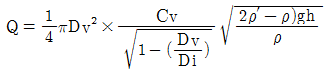
, 벤츄리 유출계수 : 0.98, 물의 비중 1, 수은의 비중 13.6)- 1270cm2/sec
- 1317cm2/sec
- 15cm2/sec
- 11356cm2/sec
(정답률: 52%)
35.
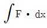
는 어떤 에너지를 나타내는 식인가? (단, F는 힘을 나타낸다.)- 일
- 열
- 유동일
- 위치 에너지
(정답률: 62%)
36. 엔트로피에 관한 설명으로 옳은 것은?
- 비가역 사이클에서는 클라우지우스(clausius)의 적분은 영이다.
- 엔트로피를 구하는 적분경로는 반드시 가역변화라야 한다.
- 엔트로피는 상태량이 아니다.
- 우주는 전체의 엔트로피가 궁극적으로 최대가 되는 방향으로 이동하지 않는다.
(정답률: 25%)
37. 상태량 간의 관계식 TdS = dH - VdP 에 관한 설명으로 옳지 않은 것은? (단, T 는 절대온도, S 는 엔트로피, H 는 엔탈피, V 는 비체적, P 는 압력)
- 이 식은 가역과정에 대해서 성립한다.
- 이 식은 비가역 과정에 대해서도 성립한다.
- 이 식은 가역과정의 경로에 따라 적분할 수 있다.
- 이 식은 비가역 과정의 경로에 대하여도 적분할 수 있다.
(정답률: 23%)
38. 랭킨(Rankine) 사이클에 대한 설명이다. 틀린 것은?
- 랭킨 사이클에도 단점이 존재한다.
- 카르노 사이클(Carnot cycle) 보다 효율이 낮다.
- Reheat cycle 의 단점을 개선한 cycle 이다.
- 포화수증기를 생산하는 사이클이다.
(정답률: 54%)
39. T kg/cm2, 60℃에서 질소 2.3kg 산소 1.8kg의 기체 혼합물이 등엔트로피 상태로 압축되어 3.5kg/cm2 로 되었다. 이때 내부에너지 변화는 약 얼마인가? (단, Cv = 0.17kcal/kgㆍ℃, Cp = 0.24kcal/kgㆍ℃이고, 이 때 비열비(k)는 1.4이다)
- 80.31kcal
- 99.89kcal
- 1⑤.37kcal
- 109.36kcal
(정답률: 31%)
40. 다음 중 일반적으로 냉매(refrigerant)로 사용되지 않는 것은?
- 암모니아(Ammonia)
- 프레온(Freon)
- 이산화탄소
- 오산화인
(정답률: 73%)
3과목: 계측방법
41. 제어장치 중 기본 입력과 검출부 출력의 차를 조작부에 신호로 전하는 부분은?
- 조절부
- 검출부
- 비교부
- 제어부
(정답률: 87%)
42. 부자(float)식 액면계의 특징으로 잘못된 것은?
- 원리 및 구조가 간단하다.
- 기구가 간단하고 고장이 적다.
- 액면이 심하게 움직이는 곳에 사용하기 좋다.
- 액면 상, 하 한계에 경보용 리미트 스위치를 설치할 수 있다.
(정답률: 89%)
43. 가스크로마토그래피는 주로 기체의 어떤 특성을 이용하여 분석하는 장치인가?
- 분자량
- 부피
- 분압
- 확산속도
(정답률: 93%)
44. 열관리 측정기기 중 Oval 미터는 주로 무엇을 측정하기 위한 것인가?
- 온도
- 압력
- 위치
- 유량
(정답률: 80%)
45. 자동제어의 방식에서 PID 동작이라 함은?
- 비례동작
- 비례, 적분, 미분동작
- 비례, 적분동작
- 미분, 적분동작
(정답률: 79%)
46. 다음 중 계기의 정도(精度)보다 자동제어를 용이하게 하고자 할 때 자동제어와 원격조정에 용이한 압력계는?
- 분동식 압력계
- 2액마노메타 압력계
- 브르돈관식 압력계
- 플로우트식 압력계
(정답률: 46%)
47. 액체봉입식 온도계의 장점이 아닌 것은?
- 구조가 간단하고 설치가 용이하다.
- 계기 자체에 다른 보조 전원이 필요없다.
- 전기식 온도계에 비해 미세한 변화를 검출하는데 적합하다.
- 취급이 용이하고 가격이 저렴하다.
(정답률: 65%)
48. 열전 온도계의 열전대 중 사용 온도가 가장 높은 것은?
- 동 - 콘스탄탄(CC)
- 철 - 콘스탄탄(IC)
- 크로멜 - 알루멜(CA)
- 백금 - 백금로듐(PR)
(정답률: 74%)
49. 가스의 상자성(常磁性)을 이용하여 만든 세라믹식 가스 분석계는?
- 가스크로마토그래피
- O2 가스계
- CO2 가스계
- SO2 가스계
(정답률: 94%)
50. 다음 중 탄성 압력계의 탄성체가 아닌 것은?
- 벨로즈(bellows)
- 다이아프램(Diaphram)
- 리퀴드벌브(Liquid Bulb)
- 브르돈 튜브(Bourdon tube)
(정답률: 67%)
51. 탄성 압력계의 검정용 표준 등 교정에 쓰이는 시험기는?
- 기준 분동식 압력계
- 격막식 압력계
- 정밀 압력계
- 침종식 압력계
(정답률: 80%)
52. 전자 유량계의 특성에 대한 설명 중 가장 거리가 먼 내용은?
- 도전성 유체에만 한하여 사용한다.
- 압력손실은 거의 없다.
- 점도가 높은 유체는 사용하기 곤란하다.
- 응답이 매우 빠르다.
(정답률: 78%)
53. 고압 밀폐 탱크의 액면 제어용으로 가장 많이 이용되는 액면계는?
- 편위식 액면계
- 차압식 액면계
- 부자식 액면계
- 기포식 액면계
(정답률: 59%)
54. 유량 측정기기 중 유체가 흐르는 단면적이 변하므로서 직접 유체의 유량을 읽을 수 있는 기기, 즉 압력차를 측정할 필요가 없는 장치는?
- 오리피스 미터
- 벤추리 미터
- 로타 미터
- 피토 튜브
(정답률: 58%)
55. 열전 온도계의 열기전력은 무엇으로 측정하는가?
- 전위차
- 파고계
- 전력계
- 저항계
(정답률: 84%)
56. 순간치를 측정하는 유량계에 속하지 않는 것은?
- 오벌(Oval) 유량계
- 벤튜리(Venturi) 유량계
- 오리피스(Orifice) 유량계
- 플로우노즐(Flow-nozzle) 유량계
(정답률: 72%)
57. 다음 온도계 중 가장 높은 온도를 측정할 수 있는 온도계는?
- 열전 온도계
- 압력식 온도계
- 수은식 유리 온도계
- 광고온계
(정답률: 62%)
58. 다음 중 미압 측정용에 가장 적절한 압력계는?
- 브르돈관식 압력계
- 경사관식 압력계
- 분동식 압력계
- 전기식 압력계
(정답률: 82%)
59. 자동제어의 특성 설명으로 잘못된 것은?
- 작업능률이 향상된다.
- 인건비는 증가하나 시간이 절약된다.
- 작업에 따른 위험 부담이 감소한다.
- 원료나 연료를 경제적으로 운영할 수 있다.
(정답률: 75%)
60. 대기압이 758mmHg일 때 진공도 90%의 절대 압력(kg/cm2)을 계산하면?
- 0.927
- 0.103
- 0.002
- 0.836
(정답률: 70%)
4과목: 열설비재료 및 관계법규
61. 에너지이용합리화법상의 효율관리기자재에 속하지 않는 것은?
- 전기철도
- 조명기기
- 전기세탁기
- 자동차
(정답률: 65%)
62. 다이어프램 밸브(diaphram valve)의 특징이 아닌 것은?
- 유체의 흐름이 주는 영향이 작다.
- 기밀을 유지하기 위한 패킹이 불필요하다.
- 유체의 역류를 방지하기 위한 것이다.
- 산 등의 화학 약품을 차단하는데 사용하는 밸브이다.
(정답률: 82%)
63. 다음 중 에너지이용합리화법령상 검사대상기기가 아닌 것은?
- 최고사용압력이 0.2MPa을 초과하는 기체를 보유하는 용기로 내용적이 0.04m이상인 2종 압력 용기
- 가스사용량이 15kg/h인 소형온수보일러
- 정격용량이 0.58MW 초과인 철금속가열로
- 전열면적 6m2, 최고사용압력 0.2MPa인 강철제보일러
(정답률: 50%)
64. 다음 중 산성 내화물에 속하는 것은?
- 고알루미나질
- 크롬-마그네시아질
- 마그네시아질
- 샤모트질
(정답률: 69%)
65. 에너지이용합리화법에 규정된 국가에너지절약추진위원회의 위원에 포함되지 않는 자는?
- 환경부장관
- 기획예산처장관
- 노동부장관
- 과학기술부장관
(정답률: 54%)
66. 내화물의 구비조건으로 가장 거리가 먼 것은?
- 화학적으로 침식되지 않을 것
- 내마모성이 클 것
- 온도의 급격한 변화에 의해 파손이 적을 것
- 상온 20℃ 및 사용온도에서 압축강도가 적을 것
(정답률: 75%)
67. 연소가스(화염)의 진행방향에 따라 요로를 분류한 명칭인 것은?
- 연속식 가마
- 도염식 가마
- 직화식 가마
- 가스 가마
(정답률: 84%)
68. 다음 중 규석벽돌의 특성이 아닌 것은?
- 내마모성이 좋다.
- 열전도율이 낮다.
- 내화도가 높다. (SK 31~33)
- 저온에서 스폴링이 발생되기 쉽다.
(정답률: 7%)
69. 에너지이용합리화법에서 에너지관리공단의 이사장은 누가 임명하는가?
- 산업자원부장관
- 노동부장관
- 행정자치부장관
- 에너지관리공단 이사회
(정답률: 65%)
70. 요로의 목적에 해당되지 않는 것은?
- 물체의 용융을 목적으로 하는 것
- 조직 변화를 수반하는 소성, 가공을 목적으로 하는 것
- 연료를 연소시켜 용기내의 액체를 수증기화 하는 것
- 금속 등의 조직변화 및 변형을 제거하기 위한 것
(정답률: 50%)
71. 다음 중 최고 안전 사용온도(℃)가 가장 낮은 보온재는?
- 염화비닐 포옴
- 포옴글래스
- 암면
- 규산칼슘
(정답률: 64%)
72. 보온.단연재를 구분할 때 약 850 ~ 1200℃ 정도까지 견디는 것을 무엇이라 하는가?
- 단열재
- 보온재
- 보냉재
- 내화 단열재
(정답률: 39%)
73. 에너지이용합리화법령에 규정된 특정열사용 기자재 품목이 아닌 것은?
- 축열식 전기보일러
- 태양열 집열기
- 철금속 가열로
- 용광로
(정답률: 29%)
74. 각종 내화벽돌을 쌓을 때 결합제로 사용되는 내화모르타르의 분류에 속하지 않는 것은?
- 열경성 내화모르타르
- 화경성 내화모르타르
- 기경성 내화모르타르
- 수경성 내화모르타르
(정답률: 53%)
75. 다음 중 보온재로 쓸 때 열전도율이 가장 낮은 재료는? (단, 열전도율의 단위는 kcal/m∙h℃, 온도는 70±5℃ 때)
- 양면
- 폴리우레탄폼
- 유리섬유
- 퍼얼라이트
(정답률: 47%)
76. 캐스타블 내화물의 설명으로 옳지 않은 것은?
- 소성할 필요가 없다.
- 건조, 소성시 수축이 적다.
- 접합부없이 노체를 구축할 수 있다.
- 내스폴링성이 작고 열전도율이 크다.
(정답률: 60%)
77. 로내 강의 산화를 다소 감소시킬 수 있는 연소가스는?
- O2
- CO
- CO2
- H2O
(정답률: 43%)
78. 에너지이용합리화법령에 규정된 검사의 종류와 적용대상이 틀리게 연결된 것은?
- 용접검사 : 동체.경판 및 이와 유사한 부분을 용접으로 제조하는 경우의 검사
- 구조검사 : 강판, 관 또는 주물류를 용접, 확대, 조립, 주조 등에 의하여 제조하는 경우의 검사
- 개조검사 : 증기보일러를 온수보일러로 개조하는 경우의 검사
- 재사용검사 : 사용 중 연속 재사용하고자 하는 경우의 검사
(정답률: 50%)
79. ( ) 안에 알맞은 것은?
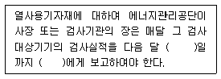
- 5일, 산업자원부장관
- 10일, 시.도지사
- 7일, 시.도지사
- 15일, 산업자원부장관
(정답률: 39%)
80. 에너지이용합리화법령에서 정한 검사의 유효 기간이 잘못된 것은?
- 보일러 설치검사 : 1년
- 압력용기 개조검사 : 1년
- 보일러 설치장소 변경검사 : 1년
- 압력용기 재사용검사 : 2년
(정답률: 9%)
5과목: 열설비설계
81. 다음 중 보일러수로서 알맞은 [pH]는?
- 5 전후
- 7 전후
- 11 전후
- 12 이상
(정답률: 67%)
82. 3×1. 5×0.1인 탄소강판의 열전도계수가 35kcal/mh℃, 아래면의 표면온도는 40℃로 단열되고, 위 표면온도는 30℃일 때 주위공기 온도를 20℃라 하면 위 표면으로 부터의 대류 열전달계수(kcal/m2h℃)는?
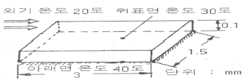
- 200kcal/m2h℃
- 250kcal/m2h℃
- 300kcal/m2h℃
- 350kcal/m2h℃
(정답률: 28%)
83. 보일러의 용접 설계에서 두께가 다른 판을 맞대기 이음할 때 중심선을 일치시킬 경우 얼마 이하의 기울기로 가공하여야 하는가?
- 1/2
- 1/3
- 1/4
- 1/5
(정답률: 47%)
84. 보일러 제조검사 중 용접건사를 기계적 시험으로 하려한다. 표면굽힘 시험에서 용접부의 넓은 쪽이 바깥이 되도록 미리 시험편의 양 끝각 1/3을 약 30도 굽혀 양끝을 서서히 눌러 용접부 표점간의 연신율을 얼마 이상 굽어질 때까지 실시하여야 하는가?
- 10%
- 20%
- 30%
- 40%
(정답률: 34%)
85. 어느 보일러의 2시간 동안 증발량이 3600kg이고, 증기압이 5kg/cm2, 급수온도는 80℃라고 한다. 이 압력에서 증기의 엔탈피는 640kcal/kg일 때 증발계수는 얼마인가? (단, 물의 잠열은 539kcal/kg이다.)
- 0.89
- 1.04
- 1.41
- 1.62
(정답률: 42%)
86. 이온교환수지 재생에서의 재생방법으로 적합한 것은?
- 양이온교환수지는 가성 소다, 암모니아로 재생한다.
- 양이온교환수지는 소금 혹은 염화수소, 황산으로 재생한다.
- 음이론교환수지는 소금 혹은 황산으로 재생한다.
- 음이온교환수지는 암모니아 혹은 황산으로 재생한다.
(정답률: 57%)
87. 다음 중 특수열매체 보일러에서 가열 유체로 사용되는 것은?
- 폴리아미드
- 다우샴액
- 텍스트린
- 에스테르
(정답률: 36%)
88. 외경 76mm, 내경 68mm, 유효길이 4800mm의 수관 96개로된 수관식 보일러가 있다. 이 보일러의 시간당 증발량은? (단, 수관이외 부분의 전열면적은 무시하며, 전열면적 1m2당의 증발량은 26.9kg/h 이다.)
- 2659 kg/h
- 2759 kg/h
- 2859 kg/h
- 2959 kg/h
(정답률: 46%)
89. 연관 보일러에서 연관의 최소 피치를 계산하는데 사용하는 식은? (단, P는 연관의 최소 피치(mm), t는 연관판의 두계(mm), d는 관 구멍의 지름(mm)이다.)
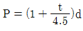
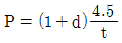
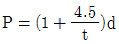
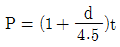
(정답률: 70%)
90. 노통보일러에서 일어나는 팽창을 흡수하는 역학을 하는 것은?
- 엔드플레이트
- 프라이밍 방지기
- 가셋스테이
- 애덤슨조인트
(정답률: 40%)
91. 그림과 같이 두께가 L인 무한 판형 열전도시스템에서 X방향으로만 열전달이 일어나고, 내부에서 열의 발생 혹은 소멸이 없으며 일정 상태의 열전도가 이루어졌다고 가정할 때, 판내부에서의 X 에 따른 온도분포를 나타내는 식을 유도하면? (단, 열전도에 대한 일반식은
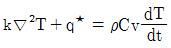
)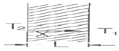
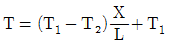
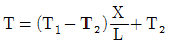
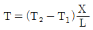
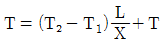
(정답률: 27%)
92. 향류열교환기의 대수평균온도차가 300℃, 열관류율이 15kcal/m2h℃, 열교환면적이 8m 일 때 열교환 열량은 몇 kcal/h인가?
- 16000
- 26000
- 36000
- 46000
(정답률: 60%)
93. 다음 중 보일러의 노통을 보일러 통에 대해 편심으로 설치하여 물의 순환작용을 촉진시켜 줄 수 있는 보일러는?
- 코르니쉬 보일러
- 라몬트 보일러
- 케와니 보일러
- 기관차 보일러
(정답률: 72%)
94. 보일러와 압력용기에서 일반적으로 사용되는 계산식에 의해 산정되는 두께로서 부식여유를 포함한 두께를 무엇이라 하는가?
- 계산 두께
- 실제 두께
- 최소 두께
- 최대 두께
(정답률: 71%)
95. 랜커셔 보일러에 대한 설명 중 틀린 것은?
- 같은 지름의 코르니쉬 보일러와 비교하면 전열면적이 크다.
- 노통이 1개이다.
- 노내 온도의 급강하가 적다.
- 원통형의 노통이 2개이다.
(정답률: 64%)
96. 4mm두께 강판을 맞대기용접 이음시 적합한 용접형식은?
- V형
- I형
- X형
- H형
(정답률: 24%)
97. 증기압력 1.2kg/cm2 의 포화증기(포화온도 104.25℃, 증발잠열 536.1kcal/kg)를 이송시키는 내경 52.9mm, 길이 50m인 강관 끝에 설치할 트랩 용량(kg/h)은? (단, 강관 총중량 : 270kg, 강관비열 : 0.115kcal/kg℃, 외부온도 0℃, 트랩안전계수 : 3, 관 증기유동시간 : 5분)
- 157.3kg/h
- 179.6kg/h
- 217.4kg/h
- 232.7kg/h
(정답률: 20%)
98. 자연순환식 수관보일러의 물의 순환에 관한 설명으로 옳지 않은 것은?
- 순환을 높이기 위하여 수관을 경사지게 한다.
- 순환을 높이기 위하여 수관 직경을 크게 한다.
- 순환을 높이기 위하여 보일러수의 비중차를 크게 한다.
- 발생증기의 압력이 높을수록 순환력이 커진다.
(정답률: 32%)
99. 다음 중 스케일의 주성분에 해당되지 않은 것은?
- 탄산칼슘
- 규산칼슘
- 탄산마그네슘
- 과산화수소
(정답률: 74%)
100. 강판의 두께가 1.5cm, 리벳의 직경이 2.5cm, 피치 5cm의 한줄 겹치기 리벳 조인트에서 한 피치마다 하중이 1500kg이라 할 때 강판에 생기는 인장응력은?
- 100kg/cm2
- 210kg/cm2
- 330kg/cm2
- 400kg/cm2
(정답률: 20%)
G' = (CO2 + 연료 중의 탄소분) - 산소
따라서 정답은 ""이다.